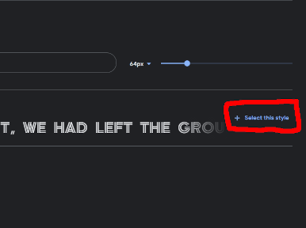
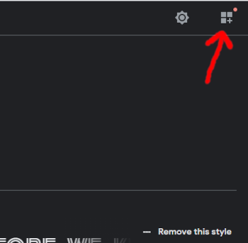
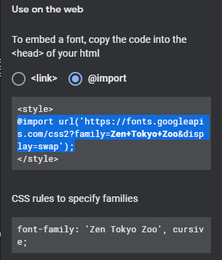
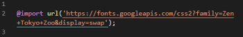
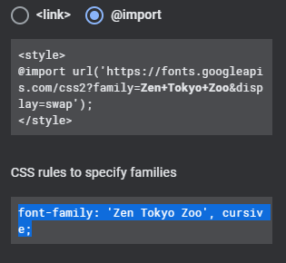
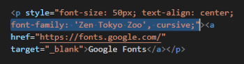
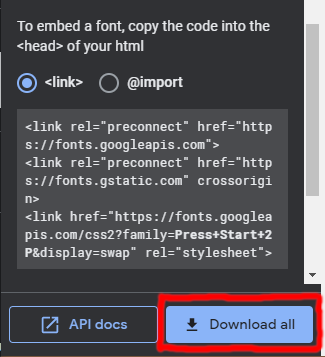
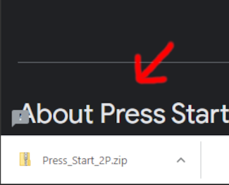
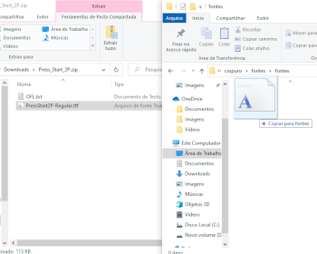
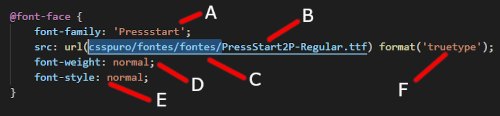

O google fonts é um site que nós utilizamos para pegar fontes sem precisar baixar, assim como um vídeo de youtube, nós conseguimos incorporar essas fontes em nosso site. Para incorporar essas fontes é bem simples, mas para ficar mais simples ainda irei exemplificar com fotos:
Abra o google fonts e escolha a fonte que queira usar
Logo em seguida aperte neste botão ↓

Caso uma janela não aparecer, aperte neste ícone localizado no canto superior direito da tela ↓

Assim que a janela abrir, escolha a opção "import" e copie o a parte do texto destacada ↓

Agora na parte do seu código css, apenas cole no início do código(obs: não coloque dentro de nenhuma chave, apenas cole no início) ↓

Agora que você colou o @import basta copiar o font family e utilizar em seu código ↓


o resultado disso foi o link Google Fonts lá no topo da página.
As fontes internas são basicamente caso o seu cliente queira colocar uma fonte em expecífico que não tenha(meio improvável) no google fonts, ou também pode ser que a fonte seja paga, e o cliente comprou ela.
As fontes internas são divididas em 2 tipos de arquivos, otf & ttf(também tem outros tipos, mas para o que precisamos estes estão bons). Em si, colocar fontes internas dá um pouco mais de trabalho, já que você precisa baixar a fonte e utilizar um comando em expecífico no Css
Neste caso vamos utilizar o google fonts como auxilio, nele tem como baixar as fontes também.
OBS: lembre-se de apertar na tecla remove all antes de continuar escolhendo fontes caso você queira apenas uma, porque se não você irá importar várias fontes juntas
primeiro de tudo escolha a fonte no qual irá utilizar.
faça o mesmo procedimento que você fez nas fontes externas, porém não faça o passo 4 em diante, neste caso ao invés de copiar iremos baixar.
aperte no botão de download all ↓

Assim que apertar em baixar, irá baixar um zip, abra ele ↓
Assim que você abrir esse zip, dependendo da fonte que você escolher vai ter ttf, otf ou até mesmo os dois tipos de arquivo, o ideal é que tenha os dois, mas em questão de fonte a "maioria" dos navegadores são compatíveis, mas quanto mais compatibilidade melhor.

Crie uma pasta(o nome da qual eu criei é fonts) dentro da pasta onde está o site, assim você tem uma organização melhor dos documentos e não faz uma bagunça depois. Copie e cole o documento de dentro do zip, para a pasta que você criou.

agora que chega a parte um pouco complicada, para você fazer a fonte funcinar você precisa utilizar o comando @font-face{}. Eu irei colocar uma print na tela e explicar todos os parâmetros dentro dele:

O font-family neste caso você pode escolher, mas lembre-se não vá colocar algo aleatório, de preferencia coloque algo no qual irá se lembrar, como o próprio nome da fonte
Este é o verdadeiro nome do arquivo da fonte, eu dividi essa explicação em duas partes
Esse é basicamente o caminho percorrido para chegar na minha fonte, como este site está todo interligado, eu aproveitei para salvar essa fonte no meu style principal para caso eu queria utilizar ela novamente, obviamente este não é o ideal de se fazer, mas eu quis fazer assim porque queria deixar a fonte que utilizei no arquivo da pagina fontes.
Este é o peso da fonte, nesse caos eu coloquei normal, mas dependendo da fonte tem outros(lighter, bold, bolder, etc...) isso intervere na espessura da fonte
Como o próprio nome diz, esse é o estilo da fonte(negrito, italico, etc...)
Esse é o tipo da fonte, no caso ele ttf, mas lembrando ttf = truetype & otf = opentype
Em questão de fontes internas e externas é basicamente isso, não irei entrar em detalhe na parte de shorthands, pesos, style, como utilizar eles e etc... eu irei entrar em detalhes e explicar eles em uma página dedicada somente para eles, caso esteja interssado neste assunto aperte aqui